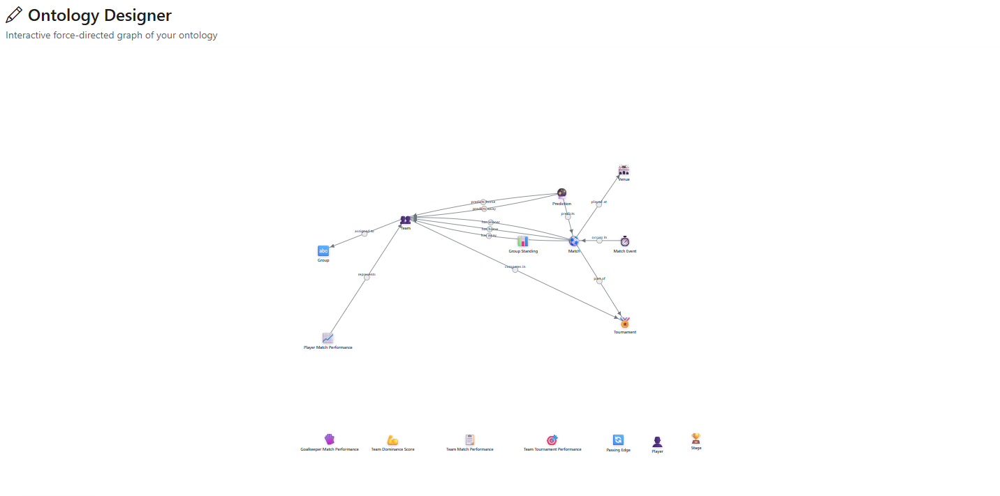
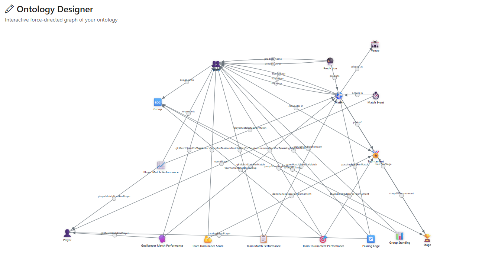
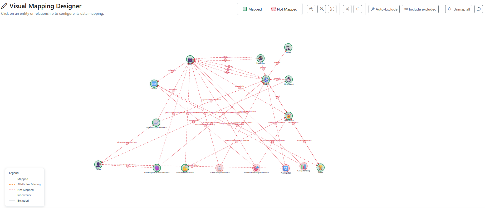

Architecture · WorldCupIQ · build status
Unity Catalog foundation, the 60-table Bronze layer, the 27-table Silver layer, the 16-table Gold star schema, and 5 Unity Catalog Metric Views are built, deployed, and populated with real data via the Asset Bundle. Bronze ingestion is dual-path: Auto Loader has run natively; Lakeflow Connect for GitHub is still blocked pending admin access, so its 3 bronze schemas were populated by a one-time migration instead — see Data Sources / Ingestion tabs. Ontology through the Streamlit app are scaffolded in the repo layout but not yet built. Click any block in the diagram — or a tab below — for the underlying repos, schemas, tables, and pipelines.
Unity Catalog
Access control
Scheduling
Quality
Four governed feeds. Three are GitHub repos forked into the yuvapraveentiger28 GitHub organization (the Lakeflow Connect GitHub connector requires an org, not a personal account — it calls /orgs/{name}/repos, which 404s on a personal account). All four have landed. predictions ran natively through Auto Loader. The 3 GitHub-sourced schemas were migrated in one shot from a prior workspace where github-fifaworldcupiq was already connected — this workspace's admin hasn't yet granted the access needed to create that connection here, so github_ingestion_pipeline itself is still pending (see Ingestion tab); the data landed, the live connector hasn't run on this workspace yet.
| Source | Origin | Tables | Status | Ingestion path |
|---|---|---|---|---|
| FIFA Training Centre-derived fifa_training_centre analytical foundation |
Alamyy/Worldcup26 (original) → forked to yuvapraveentiger28/Worldcup26 repository_id 1343166099 · files under data/csv/ |
21 tables — see Bronze tab | Landed — migrated | GitHub Connect → parse_pipeline_fifa_training_centre → bronze_fifa_training_centre |
| Relational dataset relational matches & venues authority · xG & VAR |
mominullptr/FIFA-World-Cup-2026-Dataset (original) → forked to yuvapraveentiger28/FIFA-World-Cup-2026-Dataset repository_id 1343166340 · root-level CSVs |
11 tables (incl. matches, venues) — see Bronze tab | Landed — migrated | GitHub Connect → parse_pipeline_relational → bronze_relational |
| Historical World Cups historical context, 1930–2022 |
jfjelstul/worldcup (Fjelstul World Cup Database, original) → forked to yuvapraveentiger28/worldcup repository_id 1343166547 · files under data-csv/ |
27 tables (hist_ prefix) — see Bronze tab | Landed — migrated | GitHub Connect → parse_pipeline_historical → bronze_historical |
| Pre-match predictions predictions context, decision intelligence |
Onside Arena — direct CSV download, CC-BY-4.0 /data/predictions.csv — not a git repo |
pre_match_prediction (1) | Landed | Auto Loader → bronze_predictions |
Onside Arena also publishes champions.csv (reach-round probabilities) and fixtures.csv — not ingested: fixtures overlaps the relational dataset's own matches/venues data, and champions.csv isn't referenced by any bronze table.
A single Lakeflow pipeline publishes to exactly one catalog.schema — there's no per-table override — so each datasource gets its own pipeline resource in databricks.yml, all deployed as one Asset Bundle.
Mechanism 1 · non-git sources
Mechanism 2 · git-repo sources
Mechanism 2b · downstream of Connect
| Task | Pipeline | Depends on |
|---|---|---|
| refresh_predictions | bronze_pipeline_predictions | — |
| refresh_github_raw | github_ingestion_pipeline | — |
| parse_fifa_training_centre | parse_pipeline_fifa_training_centre | refresh_github_raw |
| parse_relational | parse_pipeline_relational | refresh_github_raw |
| parse_historical | parse_pipeline_historical | refresh_github_raw |
Every schema below exists in worldcupiq_catalog (conf/00_catalog.sql, applied via scripts/setup-catalog.cmd). All 60 tables are populated: bronze_predictions via a real bronze_pipeline_predictions run (Auto Loader); the other 3 schemas via a one-time migration from a prior workspace where the GitHub connection already existed, pending this workspace's admin granting access to create github-fifaworldcupiq here (see Data Sources tab).
27 tables, fully normalizing all 60 bronze tables across all 4 sources — 2026 (fifa_training_centre + relational) entity-resolved together, plus historical (27 tables, 1930–2022) and predictions (1 table). ingestion/lakeflow/silver.py is deployed as silver_pipeline and has run successfully end to end against real bronze data — all 27 flows completed. # = primary key, → = foreign key. The diagram below is a cluster-level map; every table's full column list is in the sections underneath, grouped by cluster.
All 27 tables with their key columns — PK and FK marked on every attribute that carries one — rendered as a native Mermaid erDiagram instead of hand-drawn SVG, so the layout and every relationship line are Mermaid's own engine, not manually routed. Colored by cluster to match the diagrams above. Scroll horizontally if it doesn't fit — at 27 tables this is a wide diagram.
erDiagram
TOURNAMENT {
bigint tournament_id PK
string name
int year
int edition_number
bigint host_confederation_id FK
}
CONFEDERATION {
bigint confederation_id PK
string name
string code UK
}
STAGE {
bigint stage_id PK
bigint tournament_id FK
string name
int stage_order
}
TOURNAMENT_GROUP {
bigint group_id PK
bigint tournament_id FK
bigint stage_id FK
string name
}
QUALIFIED_TEAM {
bigint tournament_id PK,FK
bigint team_id PK,FK
bigint confederation_id FK
string qualification_route
}
TEAM {
bigint team_id PK
string name
string code UK
bigint confederation_id FK
string country_code
}
TEAM_TOURNAMENT {
bigint team_tournament_id PK
bigint tournament_id FK
bigint team_id FK
bigint group_id FK
int final_rank
}
PLAYER {
bigint player_id PK
string name
date date_of_birth
string position
}
SQUAD_MEMBER {
bigint squad_member_id PK
bigint tournament_id FK
bigint team_id FK
bigint player_id FK
int shirt_number
}
REFEREE {
bigint referee_id PK
string name
string country_code
}
REFEREE_ASSIGNMENT {
bigint assignment_id PK
bigint match_id FK
bigint referee_id FK
string role
}
MANAGER {
bigint manager_id PK
string name
string country_code
}
MANAGER_APPOINTMENT {
bigint appointment_id PK
bigint tournament_id FK
bigint team_id FK
bigint manager_id FK
}
VENUE {
bigint venue_id PK
string name
string city
string country_code
int capacity
}
MATCH {
bigint match_id PK
bigint tournament_id FK
bigint stage_id FK
bigint group_id FK
bigint venue_id FK
bigint home_team_id FK
bigint away_team_id FK
bigint winner_team_id FK
date match_date
int home_score
int away_score
double home_xg
double away_xg
}
GROUP_STANDING {
bigint group_standing_id PK
bigint group_id FK
bigint team_id FK
int points
int rank
}
TOURNAMENT_STANDING {
bigint tournament_standing_id PK
bigint tournament_id FK
bigint team_id FK
int final_rank
}
MATCH_TEAM {
bigint match_team_id PK
bigint match_id FK
bigint team_id FK
string home_away
int goals
double xg
double possession_pct
}
MATCH_PLAYER {
bigint match_player_id PK
bigint match_id FK
bigint team_id FK
bigint player_id FK
int minutes
int goals
int assists
}
MATCH_PLAYER_PHYSICAL {
bigint match_player_id PK,FK
double distance_covered_km
double top_speed_kmh
}
MATCH_GOALKEEPER {
bigint match_goalkeeper_id PK
bigint match_id FK
bigint team_id FK
bigint player_id FK
int goals_conceded
int saves
}
PASSING_EDGE {
bigint match_id PK,FK
bigint team_id PK,FK
bigint passer_id PK,FK
bigint receiver_id PK,FK
int passes
}
MATCH_EVENT {
bigint event_id PK
bigint match_id FK
bigint team_id FK
bigint player_id FK
bigint secondary_player_id FK
string event_type
int minute
}
AWARD {
bigint award_id PK
bigint tournament_id FK
string name
}
AWARD_WINNER {
bigint award_winner_id PK
bigint award_id FK
bigint player_id FK
bigint team_id FK
}
MATCH_PREDICTION_FEATURE {
bigint match_id PK,FK
bigint team_id PK,FK
double feature_01_to_65
}
PREDICTION {
bigint match_id PK,FK
bigint team_id PK,FK
double win_probability
double draw_probability
double loss_probability
string model
}
TOURNAMENT ||--o{ STAGE : has
TOURNAMENT ||--o{ TOURNAMENT_GROUP : has
TOURNAMENT ||--o{ QUALIFIED_TEAM : has
TOURNAMENT ||--o{ TEAM_TOURNAMENT : has
TOURNAMENT ||--o{ SQUAD_MEMBER : has
TOURNAMENT ||--o{ MANAGER_APPOINTMENT : has
TOURNAMENT ||--o{ MATCH : has
TOURNAMENT ||--o{ TOURNAMENT_STANDING : has
TOURNAMENT ||--o{ AWARD : has
CONFEDERATION ||--o{ TOURNAMENT : hosts
CONFEDERATION ||--o{ TEAM : affiliates
CONFEDERATION ||--o{ QUALIFIED_TEAM : slots
STAGE ||--o{ TOURNAMENT_GROUP : contains
STAGE ||--o{ MATCH : contains
TOURNAMENT_GROUP ||--o{ TEAM_TOURNAMENT : assigns
TOURNAMENT_GROUP ||--o{ MATCH : contains
TOURNAMENT_GROUP ||--o{ GROUP_STANDING : ranks
TEAM ||--o{ TEAM_TOURNAMENT : participates
TEAM ||--o{ QUALIFIED_TEAM : qualifies
TEAM ||--o{ SQUAD_MEMBER : rosters
TEAM ||--o{ MANAGER_APPOINTMENT : appoints
TEAM ||--o{ MATCH : "home team"
TEAM ||--o{ MATCH : "away team"
TEAM ||--o{ MATCH : "winner"
TEAM ||--o{ GROUP_STANDING : ranked
TEAM ||--o{ TOURNAMENT_STANDING : ranked
TEAM ||--o{ MATCH_TEAM : records
TEAM ||--o{ MATCH_PLAYER : fields
TEAM ||--o{ MATCH_GOALKEEPER : fields
TEAM ||--o{ PASSING_EDGE : records
TEAM ||--o{ MATCH_EVENT : "involved in"
TEAM ||--o{ AWARD_WINNER : "wins (team)"
TEAM ||--o{ MATCH_PREDICTION_FEATURE : features
TEAM ||--o{ PREDICTION : predicted
PLAYER ||--o{ SQUAD_MEMBER : rostered
PLAYER ||--o{ MATCH_PLAYER : plays
PLAYER ||--o{ MATCH_GOALKEEPER : plays
PLAYER ||--o{ PASSING_EDGE : "passes as passer"
PLAYER ||--o{ PASSING_EDGE : "passes as receiver"
PLAYER ||--o{ MATCH_EVENT : "primary actor"
PLAYER ||--o{ MATCH_EVENT : "secondary actor"
PLAYER ||--o{ AWARD_WINNER : "wins (player)"
REFEREE ||--o{ REFEREE_ASSIGNMENT : officiates
MANAGER ||--o{ MANAGER_APPOINTMENT : appointed
VENUE ||--o{ MATCH : hosts
MATCH ||--o{ REFEREE_ASSIGNMENT : assigned
MATCH ||--o{ MATCH_TEAM : has
MATCH ||--o{ MATCH_PLAYER : has
MATCH ||--o{ MATCH_GOALKEEPER : has
MATCH ||--o{ PASSING_EDGE : has
MATCH ||--o{ MATCH_EVENT : has
MATCH ||--o{ MATCH_PREDICTION_FEATURE : has
MATCH ||--o{ PREDICTION : has
MATCH_PLAYER ||--|| MATCH_PLAYER_PHYSICAL : extends
AWARD ||--o{ AWARD_WINNER : has
classDef clusterA fill:#f0f2ed,stroke:#7c8f6f,color:#312e2d
classDef clusterB fill:#eef1f4,stroke:#5e7a9b,color:#312e2d
classDef clusterC fill:#f7f1e9,stroke:#b8915a,color:#312e2d
classDef clusterD fill:#fdf0e0,stroke:#f7901d,color:#312e2d
classDef clusterE fill:#f4eeec,stroke:#9c6b50,color:#312e2d
classDef clusterF fill:#f0eff2,stroke:#6e6479,color:#312e2d
classDef clusterG fill:#edf4f2,stroke:#5a8f85,color:#312e2d
class TOURNAMENT,CONFEDERATION,STAGE,TOURNAMENT_GROUP,QUALIFIED_TEAM clusterA
class TEAM,TEAM_TOURNAMENT,PLAYER,SQUAD_MEMBER clusterB
class REFEREE,REFEREE_ASSIGNMENT,MANAGER,MANAGER_APPOINTMENT clusterC
class MATCH,VENUE,GROUP_STANDING,TOURNAMENT_STANDING clusterD
class MATCH_TEAM,MATCH_PLAYER,MATCH_PLAYER_PHYSICAL,MATCH_GOALKEEPER,PASSING_EDGE clusterE
class MATCH_EVENT,AWARD,AWARD_WINNER clusterF
class MATCH_PREDICTION_FEATURE,PREDICTION clusterG
PK,FK in the diagram means that column is part of a composite primary key and a foreign key at the same time (e.g. passing_edge's four-column key) — Mermaid's own key syntax only cleanly renders one marker per column, so composite PK+FK columns are called out this way instead of silently picking just one. match_prediction_feature.feature_01_to_65 stands in for the real 65 ML feature columns (see the Cluster G detail below) — listing all 65 in the diagram itself would drown out everything else.
| Bronze table | → Silver table |
|---|---|
| fifa_training_centre (21) | |
| matches | match |
| teams | team |
| players | player, squad_member |
| match_teams | match_team |
| match_appearances | match_player |
| attempts_at_goal | match_event |
| passing_network_edges | passing_edge |
| player_crosses_open_play | match_player |
| player_events | match_event |
| player_in_possession_distributions | match_player |
| player_line_breaks | match_player |
| player_offers_receptions | match_player |
| player_out_of_possession | match_player |
| player_physical_data | match_player_physical |
| team_aerial_control | match_team |
| team_defensive_pressure | match_team |
| team_goal_prevention | match_goalkeeper |
| team_goalkeeping_distribution | match_goalkeeper |
| team_key_stats | match_team |
| team_phases | match_team |
| team_set_plays | match_team |
| relational (11) | |
| matches | match |
| venues | venue |
| tournament_stages | stage |
| referees | referee |
| match_events | match_event |
| match_lineups | match_player |
| match_prediction_features | match_prediction_feature |
| match_team_stats | match_team |
| player_stats | match_player |
| squads_and_players | player, squad_member |
| teams | team |
| historical (27) | |
| hist_tournaments | tournament |
| hist_teams | team |
| hist_players | player |
| hist_matches | match |
| hist_goals | match_event |
| hist_bookings | match_event |
| hist_substitutions | match_event |
| hist_penalty_kicks | match_event |
| hist_squads | squad_member |
| hist_group_standings | group_standing |
| hist_groups | group |
| hist_host_countries | tournament_standing (host_performance) |
| hist_manager_appearances | manager_appointment (merged) |
| hist_manager_appointments | manager_appointment |
| hist_managers | manager |
| hist_player_appearances | match_player |
| hist_qualified_teams | qualified_team |
| hist_referee_appearances | referee_assignment (merged) |
| hist_referee_appointments | referee_assignment |
| hist_referees | referee |
| hist_stadiums | venue |
| hist_team_appearances | team_tournament |
| hist_tournament_stages | stage |
| hist_tournament_standings | tournament_standing |
| hist_awards | award |
| hist_award_winners | award_winner |
| hist_confederations | confederation |
| predictions (1) | |
| pre_match_prediction | prediction |
| Column | Type | Constraint | Sourced from (bronze) |
|---|---|---|---|
| tournament_id | BIGINT | PK | surrogate, generated |
| name, year | STRING, INT | NOT NULL | historical.hist_tournaments |
| edition_number | INT | — | historical.hist_tournaments |
| host_confederation_id | BIGINT | FK → confederation | historical.hist_tournaments |
| 2026 row | — | — | seeded — no bronze source has an explicit tournament table for 2026 |
| Column | Type | Constraint | Sourced from (bronze) |
|---|---|---|---|
| confederation_id | BIGINT | PK | surrogate, generated |
| name, code | STRING | NOT NULL, UQ | historical.hist_confederations |
| Column | Type | Constraint | Sourced from (bronze) |
|---|---|---|---|
| stage_id | BIGINT | PK | surrogate, generated |
| tournament_id | BIGINT | FK → tournament | — |
| name, stage_order | STRING, INT | NOT NULL | relational.tournament_stages, historical.hist_tournament_stages |
| Column | Type | Constraint | Sourced from (bronze) |
|---|---|---|---|
| group_id | BIGINT | PK | surrogate, generated |
| tournament_id | BIGINT | FK → tournament | — |
| stage_id | BIGINT | FK → stage | — |
| name | STRING | NOT NULL | historical.hist_groups; 2026 derived from relational.matches.group_name |
| Column | Type | Constraint | Sourced from (bronze) |
|---|---|---|---|
| tournament_id | BIGINT | PK (composite) · FK → tournament | — |
| team_id | BIGINT | PK (composite) · FK → team | — |
| confederation_id | BIGINT | FK → confederation | historical.hist_qualified_teams |
| qualification_route | STRING | — | historical.hist_qualified_teams |
| Column | Type | Constraint | Sourced from (bronze) |
|---|---|---|---|
| team_id | BIGINT | PK | surrogate, generated |
| name | STRING | NOT NULL | relational.teams, fifa_training_centre.teams, historical.hist_teams |
| code | STRING | UQ | relational.teams (3-letter code) |
| confederation_id | BIGINT | FK → confederation | fifa_training_centre.teams, historical.hist_teams |
| country_code | STRING | — | relational.teams |
| Column | Type | Constraint | Sourced from (bronze) |
|---|---|---|---|
| team_tournament_id | BIGINT | PK | surrogate, generated |
| tournament_id | BIGINT | FK → tournament | — |
| team_id | BIGINT | FK → team | — |
| group_id | BIGINT | FK → group, nullable (knockout-only eras) | historical.hist_team_appearances; 2026 derived from relational.matches |
| final_rank | INT | — | historical.hist_team_appearances |
| Column | Type | Constraint | Sourced from (bronze) |
|---|---|---|---|
| player_id | BIGINT | PK | surrogate, generated |
| name | STRING | NOT NULL | fifa_training_centre.players, relational.squads_and_players, historical.hist_players |
| date_of_birth | DATE | — | relational.squads_and_players |
| position | STRING | — | fifa_training_centre.players |
| Column | Type | Constraint | Sourced from (bronze) |
|---|---|---|---|
| squad_member_id | BIGINT | PK | surrogate, generated |
| tournament_id | BIGINT | FK → tournament | — |
| team_id | BIGINT | FK → team | — |
| player_id | BIGINT | FK → player | — |
| shirt_number | INT | — | fifa_training_centre.players, relational.squads_and_players, historical.hist_squads |
| Column | Type | Constraint | Sourced from (bronze) |
|---|---|---|---|
| referee_id | BIGINT | PK | surrogate, generated |
| name, country_code | STRING | NOT NULL | relational.referees, historical.hist_referees |
| Column | Type | Constraint | Sourced from (bronze) |
|---|---|---|---|
| assignment_id | BIGINT | PK | surrogate, generated |
| match_id | BIGINT | FK → match | — |
| referee_id | BIGINT | FK → referee | — |
| role | STRING | NOT NULL | MAIN / ASSISTANT / FOURTH / VAR — historical.hist_referee_appearances, hist_referee_appointments |
| Column | Type | Constraint | Sourced from (bronze) |
|---|---|---|---|
| manager_id | BIGINT | PK | surrogate, generated |
| name, country_code | STRING | NOT NULL | historical.hist_managers |
| Column | Type | Constraint | Sourced from (bronze) |
|---|---|---|---|
| appointment_id | BIGINT | PK | surrogate, generated |
| tournament_id | BIGINT | FK → tournament | — |
| team_id | BIGINT | FK → team | — |
| manager_id | BIGINT | FK → manager | historical.hist_manager_appointments, hist_manager_appearances |
| Column | Type | Constraint | Sourced from (bronze) |
|---|---|---|---|
| match_id | BIGINT | PK | surrogate, generated |
| tournament_id | BIGINT | FK → tournament | 2026 fixed value; historical.hist_matches |
| stage_id, group_id | BIGINT | FK → stage, group (nullable) | relational.tournament_stages, historical.hist_tournament_stages |
| match_number, match_date | INT, DATE | NOT NULL | relational.matches, fifa_training_centre.matches, historical.hist_matches |
| venue_id | BIGINT | FK → venue | relational.venues (join by name), historical.hist_stadiums |
| home_team_id, away_team_id, winner_team_id | BIGINT | FK → team, winner nullable | relational.matches, historical.hist_matches |
| home_score, away_score, home_penalties, away_penalties | INT | NOT NULL / nullable | relational.matches, historical.hist_matches |
| home_xg, away_xg | DOUBLE | nullable — historical has none | relational.matches (2026 only) |
| Column | Type | Constraint | Sourced from (bronze) |
|---|---|---|---|
| venue_id | BIGINT | PK | surrogate, generated |
| name, city, country_code | STRING | NOT NULL | relational.venues, historical.hist_stadiums |
| capacity | INT | — | relational.venues |
| Column | Type | Constraint | Sourced from (bronze) |
|---|---|---|---|
| group_standing_id | BIGINT | PK | surrogate, generated |
| group_id | BIGINT | FK → group | — |
| team_id | BIGINT | FK → team | — |
| played, won, drawn, lost | INT | — | historical.hist_group_standings |
| goals_for, goals_against, points, rank | INT | — | historical.hist_group_standings |
| Column | Type | Constraint | Sourced from (bronze) |
|---|---|---|---|
| tournament_standing_id | BIGINT | PK | surrogate, generated |
| tournament_id | BIGINT | FK → tournament | — |
| team_id | BIGINT | FK → team | — |
| final_rank, stage_reached | INT, STRING | — | historical.hist_tournament_standings |
| Column | Type | Constraint | Sourced from (bronze) |
|---|---|---|---|
| match_team_id | BIGINT | PK | surrogate, generated |
| match_id, team_id | BIGINT | FK → match, team | — |
| home_away | STRING | NOT NULL | relational.matches |
| goals, xg, possession_pct, shots, shots_on_target, passes, pass_completion_pct | INT/DOUBLE | — | fifa_training_centre.team_key_stats, relational.match_team_stats |
| recoveries, pressures, tackles, aerial_duels, corners | INT | — | fifa_training_centre.team_defensive_pressure, team_aerial_control, team_phases, team_set_plays |
| Column | Type | Constraint | Sourced from (bronze) |
|---|---|---|---|
| match_player_id | BIGINT | PK | surrogate, generated |
| match_id, team_id, player_id | BIGINT | FK → match, team, player | — |
| started, minutes | BOOLEAN, INT | — | fifa_training_centre.match_appearances, relational.match_lineups |
| goals, assists, shots, xg, passes, progressive_passes | INT/DOUBLE | — | fifa_training_centre.attempts_at_goal, player_in_possession_distributions, player_line_breaks, relational.player_stats |
| pressures, recoveries, duels, cards, crosses | INT | — | fifa_training_centre.player_out_of_possession, player_crosses_open_play, player_offers_receptions |
| Column | Type | Constraint | Sourced from (bronze) |
|---|---|---|---|
| match_player_id | BIGINT | PK · FK → match_player | — |
| distance_covered_km | DOUBLE | — | fifa_training_centre.player_physical_data |
| sprints, high_intensity_runs | INT | — | fifa_training_centre.player_physical_data |
| top_speed_kmh | DOUBLE | — | fifa_training_centre.player_physical_data |
| Column | Type | Constraint | Sourced from (bronze) |
|---|---|---|---|
| match_goalkeeper_id | BIGINT | PK | surrogate, generated |
| match_id, team_id, player_id | BIGINT | FK → match, team, player | — |
| goals_conceded, saves | INT | — | fifa_training_centre.team_goal_prevention |
| goal_prevention_xg | DOUBLE | — | fifa_training_centre.team_goal_prevention |
| distribution_accuracy_pct | DOUBLE | — | fifa_training_centre.team_goalkeeping_distribution |
| Column | Type | Constraint | Sourced from (bronze) |
|---|---|---|---|
| match_id, team_id, passer_id, receiver_id | BIGINT | PK (composite) · FK → match, team, player ×2 | fifa_training_centre.passing_network_edges |
| passes | INT | NOT NULL | fifa_training_centre.passing_network_edges (pass_count) |
| No progressive or xt_added — both were aspirational in this review and never actually built; the real passing_network_edges source has no equivalent columns. | |||
| Column | Type | Constraint | Sourced from (bronze) |
|---|---|---|---|
| event_id | BIGINT | PK | surrogate, generated |
| match_id, team_id | BIGINT | FK → match, team | — |
| player_id, secondary_player_id | BIGINT | FK → player, both nullable | primary actor / assister / sub-in / fouled player |
| event_type | STRING | NOT NULL | GOAL / SHOT / CARD / SUBSTITUTION / PENALTY_SHOOTOUT / VAR |
| minute | INT | NOT NULL | fifa_training_centre.attempts_at_goal, player_events, relational.match_events, historical.hist_goals/hist_bookings/hist_substitutions/hist_penalty_kicks |
| detail | STRING | — | card_type, xG for shots, VAR outcome, etc. |
| Column | Type | Constraint | Sourced from (bronze) |
|---|---|---|---|
| award_id | BIGINT | PK | surrogate, generated |
| tournament_id | BIGINT | FK → tournament | — |
| name | STRING | NOT NULL | historical.hist_awards |
| Column | Type | Constraint | Sourced from (bronze) |
|---|---|---|---|
| award_winner_id | BIGINT | PK | surrogate, generated |
| award_id | BIGINT | FK → award | — |
| player_id, team_id | BIGINT | FK → player, team — both nullable, one required | historical.hist_award_winners |
| Column | Type | Constraint | Sourced from (bronze) |
|---|---|---|---|
| match_id, team_id | BIGINT | PK (composite) · FK → match, team | — |
| home_fifa_rank, away_fifa_rank, home_elo, away_elo, home_squad_avg_value_eur, away_squad_avg_value_eur, home_prev_avg_xg_scored, away_prev_avg_xg_scored, home_rest_days, away_rest_days | INT / DOUBLE | — | relational.match_prediction_features — real named columns, verified against landed data (not the anonymous feature_01..65 placeholder originally guessed here) |
| Column | Type | Constraint | Sourced from (bronze) |
|---|---|---|---|
| match_id, team_id | BIGINT | PK (composite) · FK → match, team | — |
| win_probability, draw_probability, loss_probability | DOUBLE | NOT NULL | predictions.pre_match_prediction |
| model | STRING | — | predictions.pre_match_prediction |
| prediction_timestamp | TIMESTAMP | — | predictions.pre_match_prediction |
16 tables — 6 dimensions + 10 facts — star-schema'd from the 27 Silver tables for BI/semantic consumption. ingestion/lakeflow/gold.py is deployed as gold_pipeline and has run successfully end to end against real Silver data — all 16 flows completed. Colored by role: dimensions, match-grain facts, and tournament/group-grain facts.
erDiagram
DIM_TOURNAMENT {
bigint tournament_id PK
string name
int year
string host_country_name
int count_teams
}
DIM_STAGE {
bigint stage_id PK
bigint tournament_id FK
string name
}
DIM_GROUP {
bigint group_id PK
bigint tournament_id FK
bigint stage_id FK
string name
}
DIM_TEAM {
bigint team_id PK
string name
string code
string confederation_name
string manager_name
}
DIM_PLAYER {
bigint player_id PK
string name
date date_of_birth
string position
}
DIM_VENUE {
bigint venue_id PK
string name
string city
string country_code
int capacity
}
FACT_MATCH {
bigint match_id PK
bigint tournament_id FK
bigint stage_id FK
bigint group_id FK
bigint venue_id FK
bigint home_team_id FK
bigint away_team_id FK
bigint winner_team_id FK
date match_date
int home_score
int away_score
double home_xg
double away_xg
}
FACT_TEAM_MATCH {
bigint match_team_id PK
bigint match_id FK
bigint team_id FK
string home_away
string result
int points
int goals_for
int goals_against
double possession_pct
int shots
}
FACT_PLAYER_MATCH {
bigint match_player_id PK
bigint match_id FK
bigint team_id FK
bigint player_id FK
boolean started
int goals
int shots
int passes
double distance_covered_km
}
FACT_GOALKEEPER_MATCH {
bigint match_goalkeeper_id PK
bigint match_id FK
bigint team_id FK
bigint player_id FK
int shots_faced
int saves
double save_pct
}
FACT_PASS {
bigint match_id PK,FK
bigint team_id PK,FK
bigint passer_id PK,FK
bigint receiver_id PK,FK
int passes
}
FACT_MATCH_EVENT {
bigint event_id PK
bigint match_id FK
bigint team_id FK
bigint player_id FK
bigint secondary_player_id FK
string event_type
int minute
}
FACT_PREDICTION {
bigint match_id PK,FK
bigint home_team_id PK,FK
bigint away_team_id PK,FK
double home_win_probability
double draw_probability
double away_win_probability
}
FACT_TEAM_TOURNAMENT {
bigint team_tournament_id PK
bigint tournament_id FK
bigint team_id FK
bigint group_id FK
int matches
int wins
int draws
int losses
int goals_for
int goals_against
int points
double xg
double xga
int final_rank
}
FACT_TEAM_DOMINANCE {
bigint tournament_id PK,FK
bigint team_id PK,FK
double results_score
double xg_differential_score
double shot_quality_score
double chance_creation_score
double defensive_efficiency_score
double performance_dominance_score
}
FACT_GROUP_STANDING {
bigint group_standing_id PK
bigint group_id FK
bigint team_id FK
int played
int won
int drawn
int lost
int points
int rank
}
DIM_TOURNAMENT ||--o{ DIM_STAGE : has
DIM_TOURNAMENT ||--o{ DIM_GROUP : has
DIM_STAGE ||--o{ DIM_GROUP : contains
DIM_TOURNAMENT ||--o{ FACT_MATCH : has
DIM_STAGE ||--o{ FACT_MATCH : contains
DIM_GROUP ||--o{ FACT_MATCH : contains
DIM_VENUE ||--o{ FACT_MATCH : hosts
DIM_TEAM ||--o{ FACT_MATCH : "home team"
DIM_TEAM ||--o{ FACT_MATCH : "away team"
DIM_TEAM ||--o{ FACT_MATCH : winner
FACT_MATCH ||--o{ FACT_TEAM_MATCH : has
DIM_TEAM ||--o{ FACT_TEAM_MATCH : records
FACT_MATCH ||--o{ FACT_PLAYER_MATCH : has
DIM_TEAM ||--o{ FACT_PLAYER_MATCH : fields
DIM_PLAYER ||--o{ FACT_PLAYER_MATCH : plays
FACT_MATCH ||--o{ FACT_GOALKEEPER_MATCH : has
DIM_TEAM ||--o{ FACT_GOALKEEPER_MATCH : fields
DIM_PLAYER ||--o{ FACT_GOALKEEPER_MATCH : plays
FACT_MATCH ||--o{ FACT_PASS : has
DIM_TEAM ||--o{ FACT_PASS : records
DIM_PLAYER ||--o{ FACT_PASS : "passes as passer"
DIM_PLAYER ||--o{ FACT_PASS : "passes as receiver"
FACT_MATCH ||--o{ FACT_MATCH_EVENT : has
DIM_TEAM ||--o{ FACT_MATCH_EVENT : involved
DIM_PLAYER ||--o{ FACT_MATCH_EVENT : "primary actor"
DIM_PLAYER ||--o{ FACT_MATCH_EVENT : "secondary actor"
FACT_MATCH ||--o{ FACT_PREDICTION : predicted
DIM_TEAM ||--o{ FACT_PREDICTION : "home team"
DIM_TEAM ||--o{ FACT_PREDICTION : "away team"
DIM_TOURNAMENT ||--o{ FACT_TEAM_TOURNAMENT : has
DIM_TEAM ||--o{ FACT_TEAM_TOURNAMENT : ranked
DIM_GROUP ||--o{ FACT_TEAM_TOURNAMENT : assigns
FACT_TEAM_TOURNAMENT ||--|| FACT_TEAM_DOMINANCE : scores
DIM_GROUP ||--o{ FACT_GROUP_STANDING : ranks
DIM_TEAM ||--o{ FACT_GROUP_STANDING : ranked
classDef dimClass fill:#eef1f4,stroke:#5e7a9b,color:#312e2d
classDef matchFactClass fill:#fdf0e0,stroke:#f7901d,color:#312e2d
classDef tournFactClass fill:#edf4f2,stroke:#5a8f85,color:#312e2d
class DIM_TOURNAMENT,DIM_STAGE,DIM_GROUP,DIM_TEAM,DIM_PLAYER,DIM_VENUE dimClass
class FACT_MATCH,FACT_TEAM_MATCH,FACT_PLAYER_MATCH,FACT_GOALKEEPER_MATCH,FACT_PASS,FACT_MATCH_EVENT,FACT_PREDICTION matchFactClass
class FACT_TEAM_TOURNAMENT,FACT_TEAM_DOMINANCE,FACT_GROUP_STANDING tournFactClass
PK,FK means composite primary key + foreign key at once (same convention as the Silver diagram). FACT_TEAM_TOURNAMENT ||--|| FACT_TEAM_DOMINANCE is a 1:1 extension, not a normal fan-out — dominance scores are derived entirely from the tournament aggregate, one row each.
| Silver table | → Gold table |
|---|---|
| Cluster A — Tournament & Reference | |
| tournament | dim_tournament |
| confederation | dim_team (confederation_name column) |
| stage | dim_stage |
| tournament_group | dim_group |
| qualified_team | — (not carried forward: qualification-route detail, historical-only, not needed by the 5 demo questions) |
| Cluster B — Team & Player | |
| team | dim_team |
| team_tournament | fact_team_tournament (group_id, final_rank) |
| player | dim_player |
| squad_member | — (not carried forward: roster/shirt-number detail, not needed at gold grain) |
| Cluster C — Officials | |
| referee | — (not carried forward: officiating not used by the 5 demo questions) |
| referee_assignment | — (same) |
| manager | — (not carried forward: coaching entity not needed for Q5's framing) |
| manager_appointment | — (same) |
| Cluster D — Match Spine | |
| venue | dim_venue |
| match | fact_match |
| group_standing | fact_group_standing |
| tournament_standing | fact_team_tournament (final_rank, host_performance) |
| Cluster E — Match Performance | |
| match_team | fact_team_match |
| match_player | fact_player_match |
| match_player_physical | fact_player_match (merged) |
| match_goalkeeper | fact_goalkeeper_match |
| passing_edge | fact_pass |
| Cluster F — Events & Awards | |
| match_event | fact_match_event |
| award | — (not carried forward: award metadata, peripheral) |
| award_winner | — (not carried forward: historical-only, not needed by the 5 demo questions) |
| Cluster G — Predictions | |
| match_prediction_feature | — (not carried forward: ML model inputs, not BI/semantic content) |
| prediction | fact_prediction |
| Derived — no single Silver source | |
| fact_team_match aggregated by team+tournament | fact_team_dominance (normalized components) |
| Column | Type | Constraint |
|---|---|---|
| tournament_id | BIGINT | PK |
| name, year | STRING, INT | NOT NULL |
| host_country_name | STRING | — |
| count_teams | INT | — |
| Column | Type | Constraint |
|---|---|---|
| stage_id | BIGINT | PK |
| tournament_id | BIGINT | FK → dim_tournament |
| name | STRING | NOT NULL |
| Column | Type | Constraint |
|---|---|---|
| group_id | BIGINT | PK |
| tournament_id | BIGINT | FK → dim_tournament |
| stage_id | BIGINT | FK → dim_stage |
| name | STRING | NOT NULL |
| Column | Type | Constraint |
|---|---|---|
| team_id | BIGINT | PK |
| name, code | STRING | NOT NULL, code UQ |
| confederation_name | STRING | — |
| manager_name | STRING | — |
No country_code — silver.team never carries one (relational.teams has no clean country column, just fifa_code/confederation). Dropped when gold.py actually ran (real bug: UNRESOLVED_COLUMN).
| Column | Type | Constraint |
|---|---|---|
| player_id | BIGINT | PK |
| name | STRING | NOT NULL |
| date_of_birth, position | DATE, STRING | — |
| Column | Type | Constraint |
|---|---|---|
| venue_id | BIGINT | PK |
| name, city, country_code | STRING | name NOT NULL |
| capacity | INT | — |
| Column | Type | Constraint |
|---|---|---|
| match_id | BIGINT | PK |
| tournament_id, stage_id, group_id, venue_id | BIGINT | FK |
| home_team_id, away_team_id, winner_team_id | BIGINT | FK → dim_team, winner nullable |
| match_date, home_score, away_score | DATE, INT, INT | NOT NULL |
| home_xg, away_xg | DOUBLE | nullable — historical has none |
| Column | Type | Constraint |
|---|---|---|
| match_team_id | BIGINT | PK |
| match_id, team_id | BIGINT | FK |
| home_away, result | STRING | result: W/D/L, penalties-aware |
| points, goals_for, goals_against | INT | derived |
| possession_pct, shots, shots_on_target, corners, fouls, offsides | DOUBLE/INT | — |
| pressures, recoveries, aerial_duels | INT | — |
| Column | Type | Constraint |
|---|---|---|
| match_player_id | BIGINT | PK |
| match_id, team_id, player_id | BIGINT | FK |
| started, position_played | BOOLEAN, STRING | — |
| goals, shots, passes, passes_completed, progressive_passes | INT | — |
| recoveries, duels | INT | — |
| distance_covered_km, top_speed_kmh | DOUBLE | from match_player_physical |
| Column | Type | Constraint |
|---|---|---|
| match_goalkeeper_id | BIGINT | PK |
| match_id, team_id, player_id | BIGINT | FK, player nullable (see Silver caveat) |
| shots_faced, saves | INT | — |
| save_pct | DOUBLE | — |
| Column | Type | Constraint |
|---|---|---|
| match_id, team_id, passer_id, receiver_id | BIGINT | PK (composite) · FK |
| passes | INT | NOT NULL |
| Column | Type | Constraint |
|---|---|---|
| event_id | BIGINT | PK |
| match_id, team_id | BIGINT | FK |
| player_id, secondary_player_id | BIGINT | FK, both nullable |
| event_type, minute | STRING, INT | NOT NULL |
| Column | Type | Constraint |
|---|---|---|
| match_id, home_team_id, away_team_id | BIGINT | PK (composite) · FK |
| home_win_probability, draw_probability, away_win_probability | DOUBLE | NOT NULL |
| Column | Type | Constraint |
|---|---|---|
| team_tournament_id | BIGINT | PK |
| tournament_id, team_id, group_id | BIGINT | FK |
| matches, wins, draws, losses | INT | aggregated |
| goals_for, goals_against, points | INT | aggregated |
| xg, xga | DOUBLE | aggregated, 2026 only |
| final_rank | INT | from tournament_standing |
| Column | Type | Constraint |
|---|---|---|
| tournament_id, team_id | BIGINT | PK (composite) · FK → fact_team_tournament |
| results_score, xg_differential_score | DOUBLE | min-max normalized, 0–1 |
| shot_quality_score, chance_creation_score, defensive_efficiency_score | DOUBLE | min-max normalized, 0–1 |
| performance_dominance_score | DOUBLE | 0.30/0.25/0.15/0.15/0.15 weighted sum — weights live only here |
| Column | Type | Constraint |
|---|---|---|
| group_standing_id | BIGINT | PK |
| group_id, team_id | BIGINT | FK |
| played, won, drawn, lost, points, rank | INT | — |
5 Unity Catalog Metric Views — governed vocabulary over the 16 Gold tables, deployed to worldcupiq_catalog.semantic via CREATE OR REPLACE VIEW ... WITH METRICS LANGUAGE YAML, one .metricview.yaml file per view under semantic/. Two grains: team × tournament (2 views, sourced from the tournament-grain Gold facts) and team/player/goalkeeper × match (3 views, sourced from the match-grain Gold facts). Every measure is queried with MEASURE(col) or AGG(col) — plain column references on a measure fail with METRIC_VIEW_MISSING_MEASURE_FUNCTION, confirmed live.
flowchart TB
subgraph TG["Tournament grain — team x tournament"]
direction TB
FTT["gold.fact_team_tournament"]
FTD["gold.fact_team_dominance"]
TP[["semantic.team_performance"]]
TDOM[["semantic.team_dominance"]]
FTT --> TP
FTD --> TDOM
end
subgraph MG["Match grain"]
direction TB
FTM["gold.fact_team_match (team x match)"]
FPM["gold.fact_player_match (player x match)"]
FGM["gold.fact_goalkeeper_match (goalkeeper x match)"]
MP[["semantic.match_performance"]]
PMP[["semantic.player_match_performance"]]
GMP[["semantic.goalkeeper_match_performance"]]
FTM --> MP
FPM --> PMP
FGM --> GMP
end
classDef goldClass fill:#fdf0e0,stroke:#f7901d,color:#312e2d
classDef semClass fill:#eef1f4,stroke:#5e7a9b,color:#312e2d
class FTT,FTD,FTM,FPM,FGM goldClass
class TP,TDOM,MP,PMP,GMP semClass
Double-bordered boxes are the deployed Metric Views; plain boxes are the Gold facts they source from. Each view joins in the relevant dimension tables (dim_team, dim_player, dim_tournament) for human-readable names — omitted from the diagram for clarity, see each view's detail below.
| Metric View | Grain | Source Gold table | Dimensions | Measures |
|---|---|---|---|---|
| Tournament grain | ||||
| team_performance | team × tournament | fact_team_tournament | 10 | 20 |
| team_dominance | team × tournament | fact_team_dominance | 5 | 6 |
| Match grain | ||||
| match_performance | team × match | fact_team_match | 9 | 19 |
| player_match_performance | player × match | fact_player_match | 9 | 11 |
| goalkeeper_match_performance | goalkeeper × match | fact_goalkeeper_match | 7 | 3 |
| Dimensions | Measures |
|---|---|
| team_id, team_name, team_code, confederation_name | matches, wins, draws, losses, points |
| tournament_id, tournament_name, tournament_year | goals_for, goals_against, goal_difference |
| group_id, final_rank, host_performance | xg_for, xg_against, xg_differential |
| shot_conversion, shot_quality, shot_accuracy | |
| defensive_efficiency, chance_creation | |
| possession_pct, shots, shots_on_target, pressures |
No pass completion here — fact_team_tournament doesn't aggregate passes at team-tournament grain. See player_match_performance.
| Dimensions | Measures |
|---|---|
| team_id, team_name | results_score, xg_differential_score |
| tournament_id, tournament_name, tournament_year | shot_quality_score, chance_creation_score |
| defensive_efficiency_score | |
| performance_dominance_score |
Weights (0.30/0.25/0.15/0.15/0.15) are computed upstream in gold.py, not in this YAML — this view re-exposes the already-weighted score under governed names. The best_team context policy (README §9) points here.
| Dimensions | Measures |
|---|---|
| match_id, match_date, team_id, team_name | points, goals_for, goals_against, goal_difference |
| home_away, result | xg_for, xg_against, xg_differential |
| tournament_id, stage_id, venue_id (raw IDs) | shot_conversion, shot_quality, shot_accuracy |
| possession_pct, shots, shots_on_target | |
| corners, fouls, offsides, pressures | |
| recoveries, aerial_duels_won |
| Dimensions | Measures |
|---|---|
| match_id, match_date, player_id, player_name | goals, shots, shot_conversion |
| position_played, started | passes, passes_completed, pass_completion_pct |
| team_id, team_name, tournament_id (raw ID) | progressive_passes, recoveries, duels |
| distance_covered_km, top_speed_kmh |
| Dimensions | Measures |
|---|---|
| match_id, match_date, player_id, player_name | shots_faced, saves |
| team_id, team_name, tournament_id (raw ID) | save_percentage |
player_name was null on every row until the silver.match_goalkeeper fix above — verify with the queries in README.md or ask for the validation query set.
Phase 6 is underway using OntoBricks (Databricks Labs) instead of the hand-rolled ontology/entities.sql + GraphFrames design originally scoped in README §8 — an LLM-assisted ontology designer running against the real worldcupiq_catalog.gold and .semantic objects, backed by a Lakebase (Postgres) registry, all on this same premium workspace.
Infrastructure
Domain
Current step
Actual screenshots from OntoBricks' Ontology Designer (force-directed graph view). Left: right after the Wizard finished generating — 16 entities created, but only the ones near Team got wired; 7 entities sit disconnected at the bottom. Right: after manually adding the 25 relationships listed below — every entity connected, though dense enough near the Team/Match hubs that OntoBricks' own layout struggles to keep labels legible at this node count.

Wizard output — 7 of 16 entities orphaned

After manual relationship wiring — fully connected
Every relationship name kept globally unique — OntoBricks doesn't allow the same relationship name reused across different entity pairs, so generic names like forTeam or forMatch had to become entity-specific (teamMatchStatsForTeam, playerMatchStatsForMatch, …).
| Source entity | Relationship | Target |
|---|---|---|
| Team Match Performance | teamMatchStatsForTeam | Team |
| Team Match Performance | teamMatchStatsForMatch | Match |
| Player Match Performance | playerMatchStatsForPlayer | Player |
| Player Match Performance | playerMatchStatsForMatch | Match |
| Player Match Performance | playerMatchStatsForTeam | Team |
| Goalkeeper Match Performance | gkMatchStatsForPlayer | Player |
| Goalkeeper Match Performance | gkMatchStatsForMatch | Match |
| Goalkeeper Match Performance | gkMatchStatsForTeam | Team |
| Passing Edge | passingEdgePasser | Player |
| Passing Edge | passingEdgeReceiver | Player |
| Passing Edge | passingEdgeForMatch | Match |
| Passing Edge | passingEdgeForTeam | Team |
| Team Tournament Performance | tournamentStatsForTeam | Team |
| Team Tournament Performance | tournamentStatsForTournament | Tournament |
| Team Tournament Performance | tournamentStatsForGroup | Group |
| Team Dominance Score | dominanceScoreForTeam | Team |
| Team Dominance Score | dominanceScoreForTournament | Tournament |
| Match Event | eventPrimaryPlayer | Player |
| Match Event | eventSecondaryPlayer | Player |
| Match Event | eventForTeam | Team |
| Stage | stageOfTournament | Tournament |
| Group | groupOfStage | Stage |
| Match | matchInStage | Stage |
| Group Standing | groupStandingForGroup | Group |
| Group Standing | groupStandingForTeam | Team |
With the graph fully connected, the current step maps every entity and relationship to its real backing catalog.schema.table.column — one at a time (see finding 2 above). The designer color-codes progress: Mapped (green, solid), Attributes Missing (orange dashed), Not Mapped (red dashed), Inheritance (grey dashed), Excluded (light grey solid). Almost the entire graph below still reads red — mapping just started. Once mapping is complete, the next step is building the Knowledge Graph itself (materializing triples into worldcupiq_catalog.ontology) — see the Planned tab for what follows after that.

Visual Mapping Designer — mapping in progress, mostly Not Mapped (red)
Everything below is scaffolded in the proposed repo structure (README.md §4) but not yet deployed as real UC objects — no tables, no config beyond the empty schema. Phase 5 (Semantic) is done — see the Semantic Model tab. Phase 6 (Ontology) is underway — see the Knowledge Layer tab. Phase 7 (Context) is also underway in parallel.
Also not started: 01_grants.sql (UC groups + app service principal), MLflow tracing, and agent registration in Unity Catalog.
WorldCupIQ · Phase 0–5 (foundation, sources, bronze, silver, gold, semantic) built · Phase 6–7 (ontology, context) in progress · Phase 8–9 planned · rendered with Diagram Design